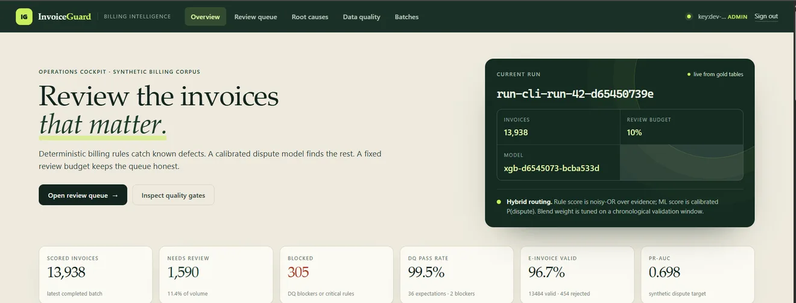
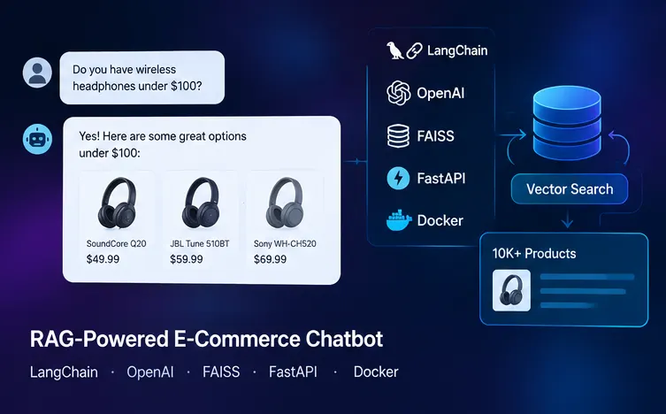
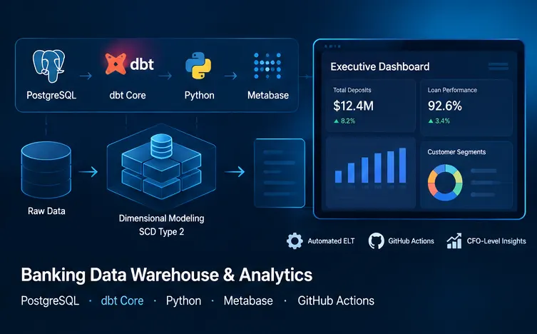
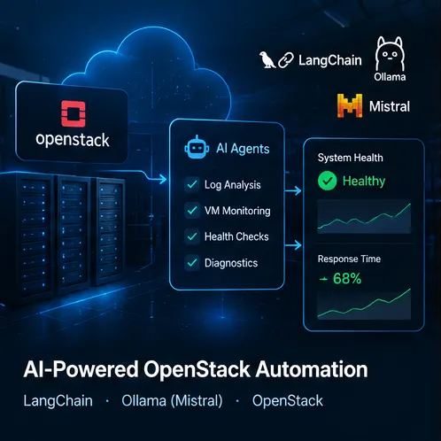
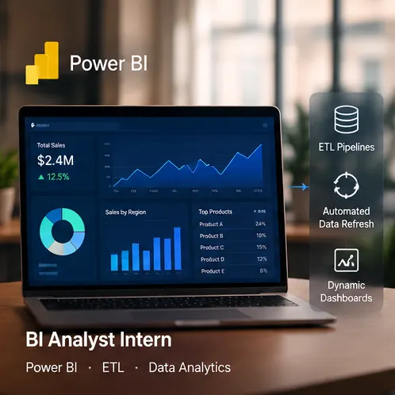

Flagship — full case · InvoiceGuard
INVOICEGUARD
Intelligent utility-billing audit & anomaly detection system.
Hello, I'm
Haroun Ben Salem
Data engineer & AI engineer
I build the quiet systems data lives in — Airflow orchestrations, Kafka streams, dbt-tested models — and the AI products that read them.
Seeking a high-impact PFE — 2027
01 · Proof of work
Every number on this page belongs to a system I actually built — with names, dates and gradeable output. Read it the way a manager reads a README: context, challenge, build, proof.
02 · Selected work
One flagship case, four working systems. Every screenshot below is the real product surface — the generated stand-ins retired.
01
Utilities bill through SAP IS-U and Opencell. Two export schemas, bending tariffs, and errors that compound into retries, VAT drift and bills customers should never receive.
02
Standardize the heterogeneous billing exports into one canonical model, encode the rules a real audit would apply, and let statistics catch what rules can't.
03
23 deterministic billing rules across tariff compliance, consumption anomalies and VAT reconciliation — plus 38 Great Expectations-compatible data-quality checks. An XGBoost anomaly engine with hybrid risk scoring, batch and online at parity. FastAPI services on PostgreSQL with SQLAlchemy and Alembic migrations. Factur-X / EN 16931 e-invoice validation. Prometheus metrics, GitHub Actions CI.
Shipped · in production — Celestial Wave Digital
AI skincare analysis that reads a face and recommends like a pharmacist.
Facial images drive a skin-profile analysis in a multilingual embedding space; retrieval fuses pgvector semantic search with PostgreSQL full-text over the catalog; a deterministic recommender ranks products by goals, eligibility and weighted rules — with the analytics that grade every suggestion.

Personal system — evaluated
Answers with receipts over a 10,000-product catalog.
LangChain-orchestrated retrieval with FAISS vectors, served through FastAPI on Docker — and graded against a held-out evaluation set instead of vibes.

Stylized render of the event stream.
Streaming — live
Five thousand events a second, judged once.
Kafka ingestion into Spark Streaming, an Isolation Forest anomaly model, PostgreSQL persistence and live Grafana dashboards watching the drift.

Dimensional modeling — dbt-tested
Numbers a CFO can sign.
Dimensional model on PostgreSQL with dbt Core transformations and tests, SCD Type 2 customer tracking, automated ELT on GitHub Actions, and Metabase dashboards for deposits, loan performance and customer behavior.
✦ The rest of the shelf
03 · Track record
2026 → now
Shipping VIF Cosmetics end-to-end: the AI skin-analysis workflow, hybrid pgvector retrieval, a deterministic recommendation pipeline, the REST workflows behind it — and the analytics that grade every recommendation.
2025

LangChain + Ollama (Mistral) agents automating OpenStack diagnostics; log-analysis workflows that cut system response time; modular agents for VM monitoring and health checks.
2023

End-to-end ETL pipelines and automated refresh workflows that minimized manual reporting hours; dynamic Power BI dashboards that department heads steered decisions by.
2022
A real-time chat application on Node.js + Express + Socket.IO; a hybrid MongoDB + MySQL database architecture; REST APIs supporting scalable real-time messaging.
The toolkit
Pipelines & data
AI & ML
Cloud & ops
Visualization
04 · Open ticket
Documented work, tested transforms, honest numbers — and the receipts above to check me against. One email starts the conversation.
Haroun Ben Salem
Data engineer · AI engineer · Tunisia
Ships end-to-end · Tests the transforms · Prints honest numbers